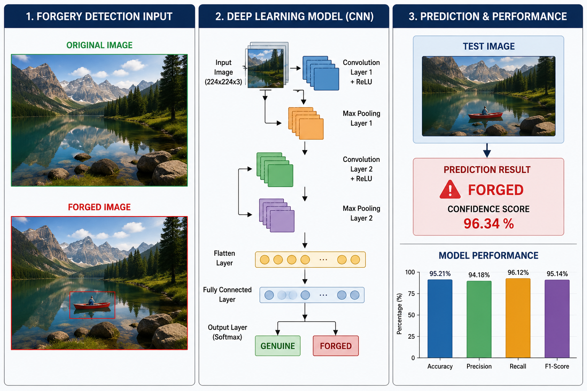

IMAGE FORGERY DETECTION USING DEEP LEARNING
• Developed an image forgery detection system using Convolutional Neural Networks (CNNs) to identify manipulated and authentic images automatically.
• Extracted hidden visual artifacts and tampering patterns from images and classified them as Genuine or Forged with high accuracy.
• Evaluated the model using Accuracy, Precision, Recall, and F1-Score metrics, achieving reliable detection performance on unseen images.
• Technologies: HTML, CSS, JavaScript, Django, Python, MySQL, Pillow (PIL), Convolutional Neural Network (CNN). Features :
- Detects whether an image is genuine or manipulated without manual inspection.
- Uses Convolutional Neural Networks (CNNs) to learn and identify hidden tampering patterns.
- Accurately distinguishes between authentic and forged images using trained models.
- Performs image resizing, normalization, and enhancement for better prediction results.

✦ Mini Project
MEDICONNECT: A WEB-BASED DOCTOR APPOINTMENT BOOKING AND HEALTHCARE MANAGEMENT SYSTEM
• Developed a user-friendly platform that enables patients to search for doctors, view available time slots, and book appointments online.
• Implemented secure patient registration, doctor profile management, appointment tracking, and medical record maintenance through role-based access.
• Designed an interactive dashboard for managing appointments, patient information, and doctor schedules, improving healthcare service efficiency.
• Technologies: HTML, CSS, JavaScript, Django, Python, MySQL.